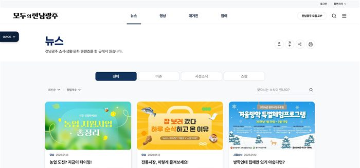
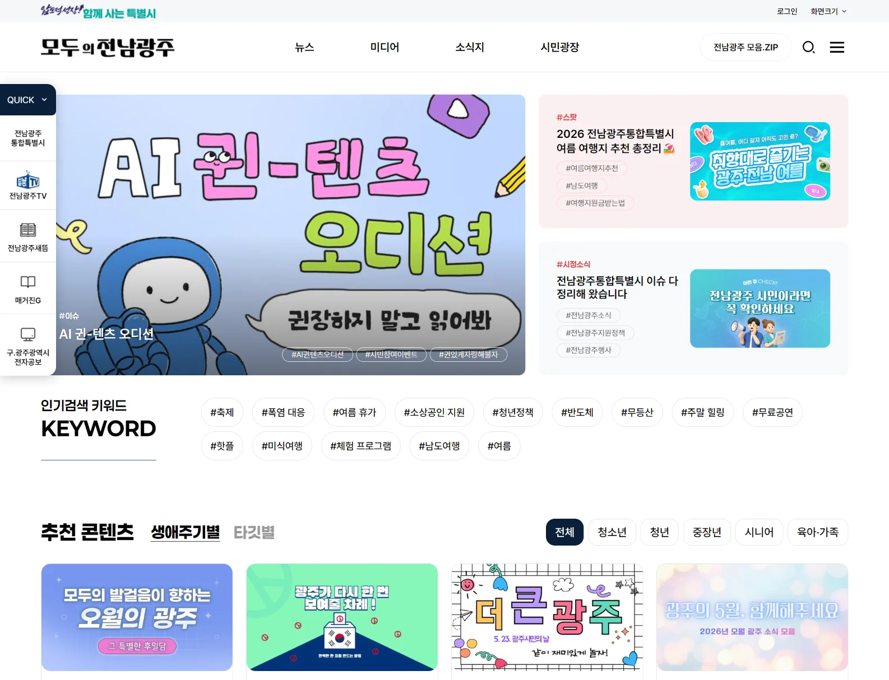
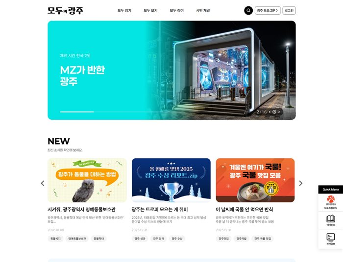
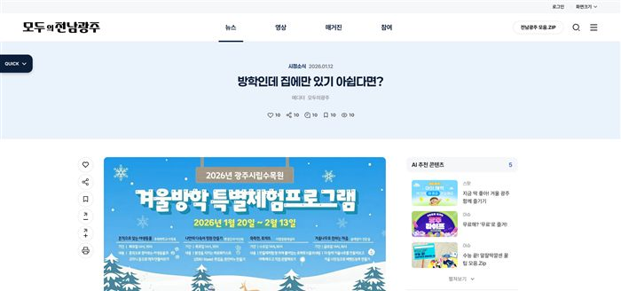
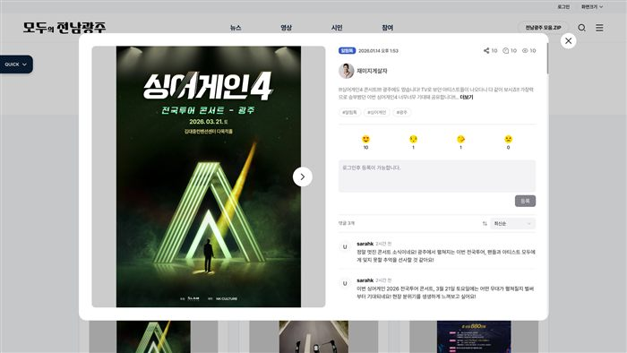

콘텐츠 탐색 최적화
카테고리와 태그 기준을 명확히 해 원하는 소식을 빠르게 찾을 수 있도록 구조화했습니다.
UX Case Study · 05
모두의 전남광주
Unifying Regional News, Media and Civic Engagement into One Discovery Experience

01 / Problem
뉴스·미디어·지역 소식·시민 참여가 분산되어 있어, 사용자가 원하는 콘텐츠에 도달하기까지의 경로가 길고 일관되지 않았습니다.
Before

After
02 / Result

카테고리와 태그 기준을 명확히 해 원하는 소식을 빠르게 찾을 수 있도록 구조화했습니다.

기사 상세에서 추천·관련 콘텐츠로 자연스럽게 이어지는 탐색 흐름을 설계했습니다.

반응, 댓글 등 참여형 인터랙션의 진입 지점을 명확히 노출해 참여율을 높였습니다.